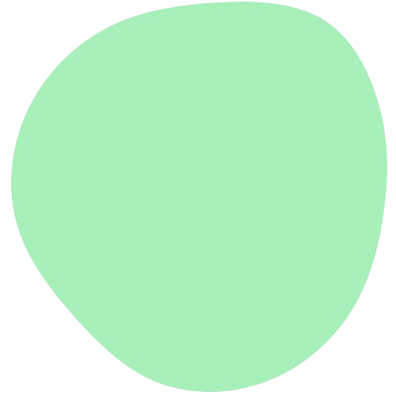
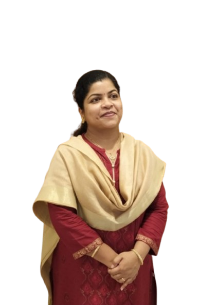

Ashmi Thara
This website is dedicated for honoring Ashmi Thara, an exceptional English teacher and educator.
Created as a heartfelt tribute to an educationist who is truly one of a kind. This page is created by K Sarvad Shenoy, her former student of Kendriya Vidyalaya Kodagu as a token of appreciation for her guidance and dedication.
Thank you, ma'am, for the invaluable lessons and unforgettable experiences.